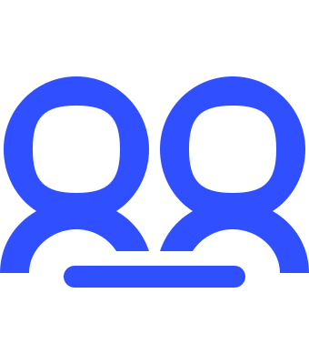
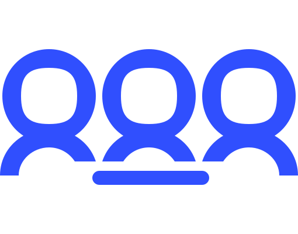
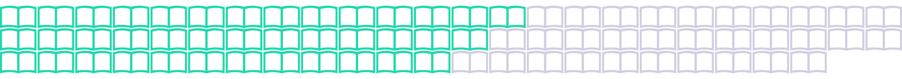

Code katas are a perfect way to learn clean coding. Ours is designed as a two-hour team exercise and workshop. The objective is to use the Java by Comparison method to clean up our fictitious, specially-uglified legacy code.
Our goal is to help you train one of the most useful skills to have in any professional programming environment: Making the most use of a very small time box to effectively improve problematic code.
Participants work in pairs. Each pair is equipped with a copy of Java by Comparison and a handy checklist.
Only the comparisons from the book may be used to change the code. Pairs must document which comparisons they use.
There is a 120-minute time limit.
The extreme time limit makes it impossible to optimize all of the code. The point of the exercise is to prioritize the refactorings that yield the best results in the shortest time.
Code (Java Version 8):
521 lines of code
71 blank lines
11 files
24 comments
Tests:
127 lines of code
19 blank lines
3 files
84% line coverage
Perfect your coding reflexes. Having to make sense of messy legacy code before adding new features frequently requires a significant amount of time. So does double-checking whether your own new code is well written and maintainable.
Our kata's comparison method will help you memorize the most common coding problems and enable you to correct them on the fly.
Learn to focus on quick gains. Getting approval for long hours to optimize legacy code that's already working "fine" can be a tough ask. Refactoring always saves a lot of effort down the line, but you'll rarely have an ideal amount of time available to get it all done.
Our kata's time limit encourages you to identify and prioritize the most time-efficient improvements.
Practice effective interactions. Good communication is key to any project's success, but vague and needlessly drawn-out code reviews are all too common. Working in the same space speeds up the process and enables team members to discuss their decisions face to face.
Our kata's pair programming context provides an opportunity to get together and share knowledge.
At our first workshop, eight pairs and one group of three solved the kata.


19 participants
Slightly more than half of all available examples were chosen at least once...

39 / 70 comparisons used
...but we're most interested in evaluating which types of refactorings were preferred across all teams.
Favorite chapters:
(total comparisons used across all teams)
Name Things Right (33) · Start Cleaning Up (26)
Getting rid of abbreviations and negations turned out to be a clear favorite. The list of priorities shows that all teams wisely focused on quickly implementable improvements towards increased code readability.
Most used comparisons:
Avoid Abbreviations (x8)
Avoid Negations (x7)
Simplify Boolean Expressions (x6)
Remove Commented-Out Code (x6)
Use Java Naming Conventions (x6)
Avoid Single-Letter Names (x6)
Avoid Meaningless Terms (x6)
Use Domain Terminology (x6)
Clearing up confusingly named and hard-to-read elements first is very good practice, as it doesn't take too much time to implement while immediately resulting in much cleaner code, ready for further improvement. Well done!
We had a lot of fun seeing the kata in action at BMW! If you think your organization might also benefit from our compact clean coding workshop, please drop us a line.